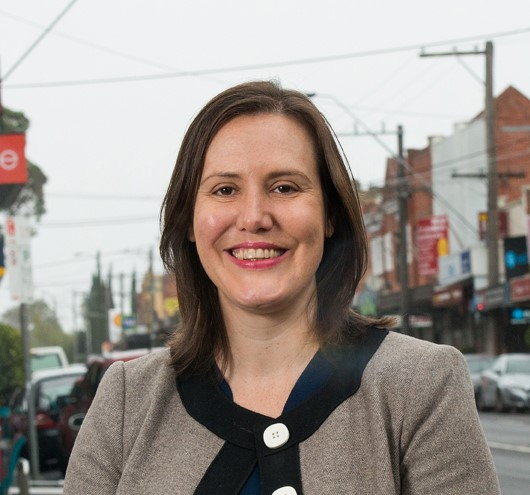

ABOUT
Kelly is currently the Minister for Jobs and Industrial Relations
and Minister for Women. Since 2015 she has been a member of Cabinet
and also Cabinet’s Expenditure Review Committee (ERC).
She has served as Minister for Revenue and Financial Services;
Minister Assisting the Prime Minister for the Public Service;
Assistant Treasurer; Minister for Small Business; and Parliamentary
Secretary to the Treasurer.
In her portfolio roles Kelly has helped cut both company and
personal income tax; made significant reforms to the financial
services sector; announced a $328 million record funding package to
combat domestic violence against women and girls; and made the
biggest reform to employment services in 20 years.
She is also proud to have introduced the first ever Women’s Economic
Security Statement – a $119 million package to help women and girls
build their financial security.
She is an Ovarian Cancer Australia Ambassador, Patron of the
Stonnington City Brass and Patron of the East Malvern Girls Football
Club.
This decision has been made both harder, and easier, because of my
admiration for, and friendship with the Prime Minister and my
conviction that he will lead our Government to victory in May.